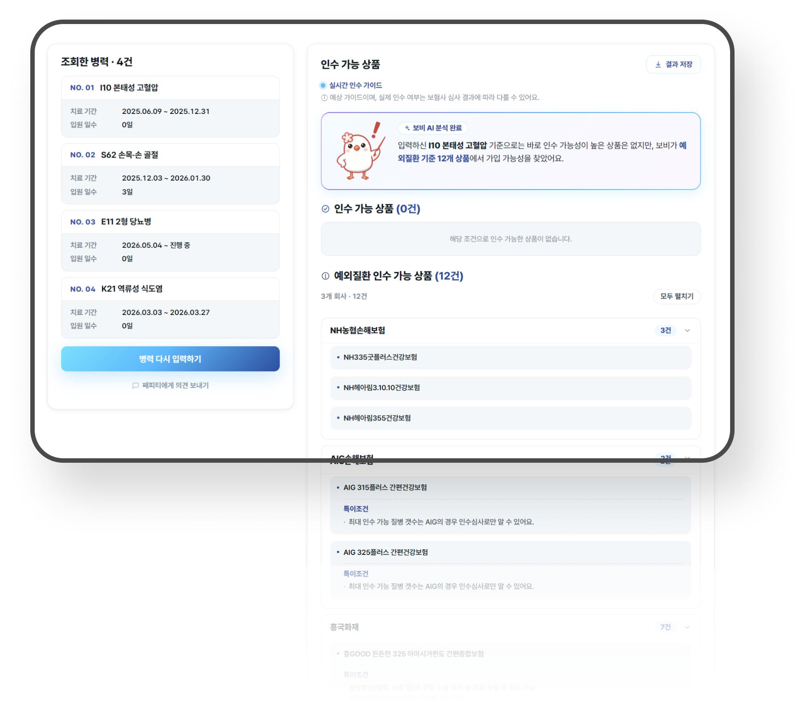
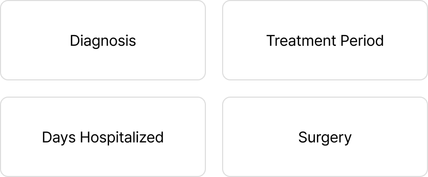
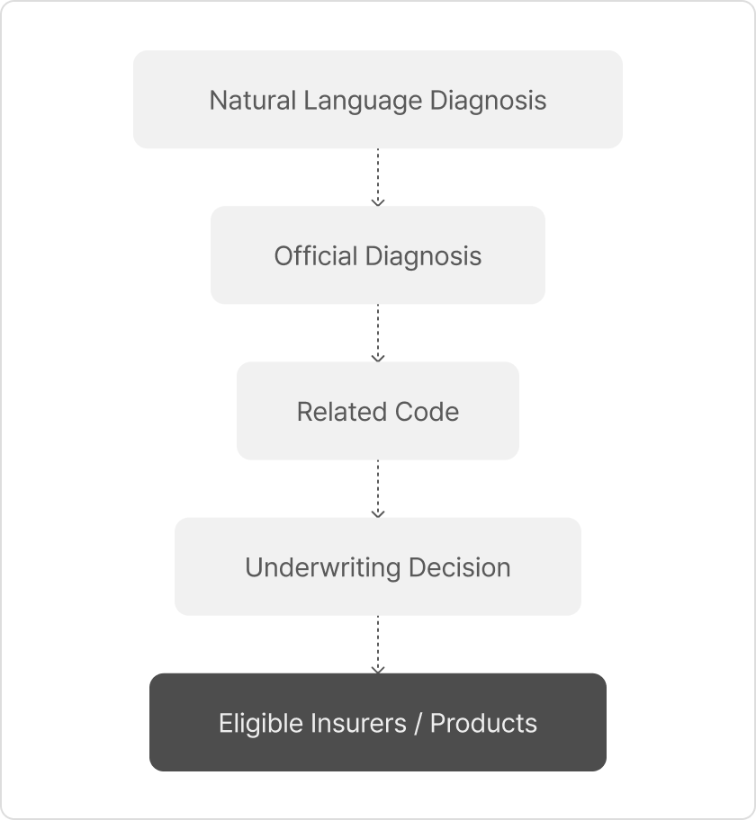
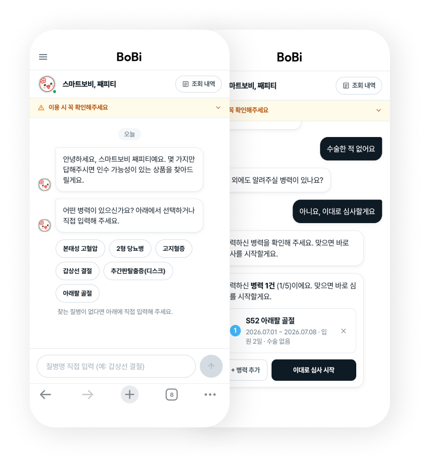
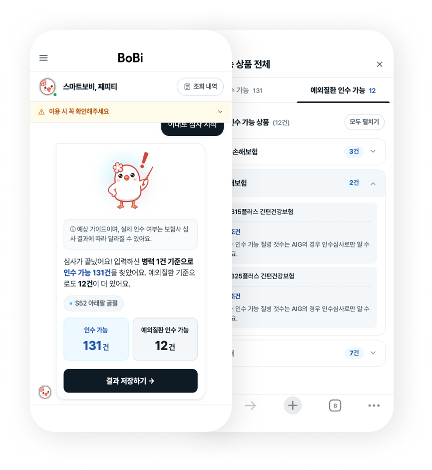
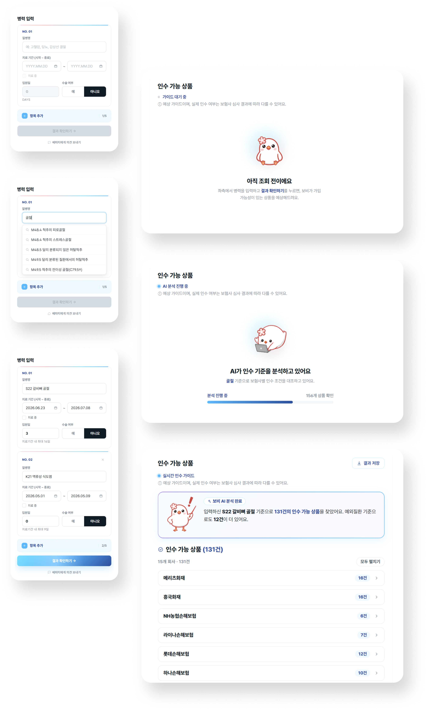

Smart BOBI
AI-powered service that identifies insurance products available for a customer based on their medical history.

How can we reduce AI processing time and costs?
Insurance policies varied in length and underwriting criteria. Analyzing full policy documents increased processing time and costs. We needed to limit the information AI processed to offer the service at an affordable price.

Structured Information to Narrow AI Analysis
I mapped natural-language diagnoses to standardized disease names and codes. I filtered relevant medical information and extracted key underwriting criteria from each insurer’s guidelines.
These criteria were structured into four variables: diagnosis, treatment duration, hospital stay, and surgery status. AI could then make decisions based on structured data rather than analyzing full documents from scratch.

Delivered Results in Under 30 Seconds
By narrowing the scope of analysis, we reduced processing time and designed a cost-efficient service to support affordable pricing.
How can we convey the AI analysis experience through a simple input-and-results flow?
Since AI cannot reliably interpret every natural-language input, I defined four key variables for underwriting decisions: diagnosis, treatment duration, length of hospitalization, and surgery status. I guided users with predefined options and input ranges to ensure all required information was provided accurately.
I designed the experience to feel interactive, even within a simple input-and-results flow. Conversational UX writing and step-by-step interactions created a natural flow during input, while clear explanations of the analysis results delivered a smarter AI service experience.
Adapting the UI to Each Device’s Context
I used a chatbot-style UI to guide users through a linear input flow. A progress indicator helped users track their current step, while a summary of previous inputs allowed them to review and edit their information.


I placed the input form and analysis results side by side. This allowed users to review and edit their inputs while viewing the results, with the overall information structure visible at a glance.
